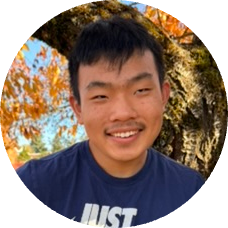

Motivation
We understands what it means to go hungry to have the only thing on our minds be where the next meal will come from. Food is instinctual; it is part of our survival. Without it, learning, pursuing our dreams, and working toward the greatest good become impossible. Access to food is often extremely limited for students throughout Portland, Oregon and Vancouver, Washington.
In addition, urturing our bodies with the healthy food that supports good health is often out of reach for those of us who are financially unstable. This is how our small group was born simply, to bring awareness to students about the resources available to them to stop hunger and bring more full, happy stomachs to education. We want other students to thrive in education; to pursue the dream and vision they desire to be without the feeling that something as essential as food is holding them back.
Mission & Vision Statement
Nourish Northwest is a student advocacy group dedicated to providing a place for community college students to thrive in their education without barriers such as food insecurity and lack of access to healthy food. We are committed to raising awareness about how limited access to healthy food affects both physical and mental well-being, as well as how college students in the Vancouver/Portland area can access more nutritious meals.

Theo Burkhalter
Theo Burkhalter is an outgoing and energetic individual who is passionate about helping group members thrive in their education and workflows. He helped develop this website, from its images to its layout design. Theo contributes by actively suggesting new ways to improve the site experience, layout, interactivity, and overall performance.
Theo brings new perspectives to the group by noticing details that might otherwise be overlooked. His knowledge of accessibility has helped the group understand that people with disabilities may experience and access digital information very differently. His suggestions—including larger text, proper headings and styles, and accessible labels such as image alt descriptions—help make the website more accessible to people who are blind or have low vision.
Theo Burkhalter
Theo Burkhalter is an outgoing and energetic individual who is passionate about helping group members thrive in their education and workflows. He helped develop this website, from its images to its layout design. Theo contributes by actively suggesting new ways to improve the site experience, layout, interactivity, and overall performance.
Theo brings new perspectives to the group by noticing details that might otherwise be overlooked. His knowledge of accessibility has helped the group understand that people with disabilities may experience and access digital information very differently. His suggestions—including larger text, proper headings and styles, and accessible labels such as image alt descriptions—help make the website more accessible to people who are blind or have low vision.